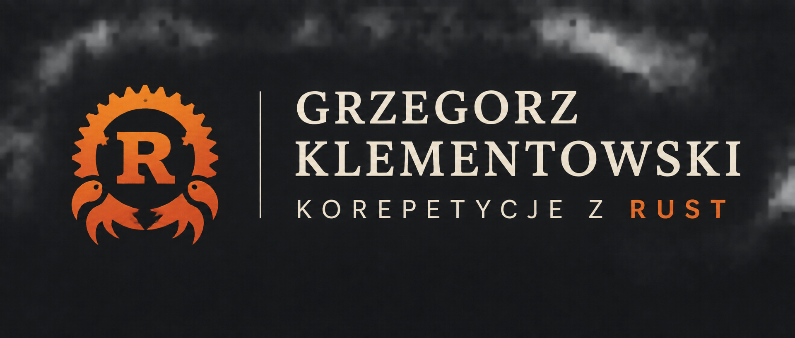

120 zł/ 60 min
Indywidualna lekcja onlineINDYWIDUALNE ZAJĘCIA · ONLINE
Rust, który
naprawdę rozumiesz.
Indywidualne korepetycje z języka Rust dla uczniów szkół średnich, studentów i osób uczących się samodzielnie.
Chcesz poznać Rust albo rozwinąć swoje umiejętności? Pracujemy nad bezpiecznym, wydajnym kodem i rozwiązujemy problemy na poziomie dopasowanym do Ciebie.
NAPISZ E-MAILnauczanie-rust@klementowski.pl
ZADZWOŃ LUB NAPISZ+48 792 502 920
WHATSAPPNapisz wiadomość
NAUKA W TWOIM TEMPIEPRAKTYKA OD PIERWSZEJ LEKCJI
01 / 01
Grzegorz KlementowskiTwój przewodnik po Rust↗
fn learning() → growth
01 PODEJŚCIE
Nie ucz się tylko
pisać kodu.
Naucz się rozumieć,
jak działa.
{ }
Bo dobry kod zaczyna się od dobrych pytań. Na zajęciach nie przepisujesz rozwiązań — odkrywasz, jak samodzielnie do nich dojść.
Zobacz, jak wyglądają zajęcia ↘02 ZAKRES ZAJĘĆ
Od pierwszego println!
po trudne „dlaczego?”
Możemy zacząć od podstaw albo skupić się na konkretnym problemie. Wybieramy to, czego potrzebujesz — nie przerabiamy programu na siłę.
01
Rust od podstaw
Pierwsze kroki, składnia i swobodne poruszanie się po kodzie.
02
Zmienne, typy i funkcje
Mutowalność, typowanie, zakresy i projektowanie funkcji.
03
Structs i Enums
Własne typy, warianty i modelowanie danych.
04
Pattern matching
Dopasowywanie wzorców z match, if let i let else.
05
Ownership i borrowing
Własność, pożyczanie i bezpieczne zarządzanie pamięcią.
06
References i lifetimes
Referencje, czas życia danych i komunikaty kompilatora.
07
Traits i generics
Wspólne zachowania, parametry typów i ograniczenia.
08
Kolekcje i iteratory
Vec, HashMap, adaptory iteratorów i closures.
09
Obsługa błędów
Option, Result, propagowanie błędów i czytelne API.
10
Testy i debugowanie
Testy jednostkowe, asercje i szukanie przyczyn błędów.
11
Algorytmy i struktury danych
Rozkładanie problemu na kroki i dobór reprezentacji.
12
Cargo i narzędzia
Projekty, zależności, Clippy, Rustfmt i wstęp do async.
Od solidnych podstaw
po async
Ownership i dobre praktyki, programowanie asynchroniczne z Tokio oraz serializacja danych z Serde.
{ }Pracujemy na
Twoim kodzie
Pomoc w projektach Rust, konfiguracji środowiska i instalacji oraz obsłudze Cargo — krok po kroku.
</>Idiomatyczny kod.
Dobre narzędzia.
Clippy i Rustfmt wspierają idiomatyczny kod w Rust. Linux / UNIX omawiamy dodatkowo, jeśli będzie przydatny w Twojej nauce.
⌘↳
Tempo, terminy i zakres zajęć dopasujemy do Ciebie. Napisz, czego potrzebujesz.
03 NAUKA PRZEZ PRAKTYKĘ
Rozumienie
zaczyna się od
uruchomienia.
Wspólnie piszemy kod, sprawdzamy zachowanie programu i wyciągamy wnioski. Oto mały przykład — iterator, który działa na pożyczonych danych.
wartości pożyczone dane
src/main.rsRUST
01// Nie musimy przejmować własności
02fn sum_of_squares(values: &[i32]) -> i32 {
03 values.iter()
04 .map(|n| *n * *n)
05 .sum()
06}
07
08let numbers = [1, 2, 3];
09let total = sum_of_squares(&numbers); // 14 Przykład edukacyjnyOWNERSHIP · ITERATORS
01 — 04OWNERSHIP · PATTERN MATCHING · BŁĘDYRUST, BEZ SKRÓTÓW
04 JAK WYGLĄDAJĄ ZAJĘCIA?
Dobry plan.
Twoje tempo.
Każde spotkanie ma konkretny cel, ale plan układamy razem. Pracujemy spokojnie, w przyjaznej atmosferze, bez presji i z uwzględnieniem Twojego poziomu.
Poznajemy Twój cel
Rozmawiamy o poziomie, doświadczeniu, dostępnych terminach i tym, co chcesz osiągnąć.
Wybieramy temat
Skupiamy się na konkretnych zagadnieniach, które sprawiają trudność.
Pracujemy na kodzie
Wspólnie rozwiązujemy zadania i sprawdzamy pomysły w praktyce.
Wyjaśniamy dlaczego
Rozkładamy działanie języka na zrozumiałe mechanizmy.
Utrwalasz samodzielnie
Dostajesz przestrzeń, by zastosować wiedzę i zbudować pewność.
05 KILKA SŁÓW O MNIE
Rust↗LEARNING IN
PROGRESS
PROGRESS
W programowaniu każde „dlaczego?” jest dobrym początkiem.
Rust szczególnie mnie interesuje, bo uczy myśleć o programie precyzyjnie. Sam systematycznie rozwijam swoje umiejętności i wiem, że trudne zagadnienia wymagają czasu. Dlatego stawiam na praktykę, cierpliwe tłumaczenie i zrozumienie mechanizmów — zamiast zapamiętywania gotowych rozwiązań. Zakres i tempo zajęć dopasowuję do Twoich celów.
Grzegorz Klementowskikorepetycje z języka Rust
“
OPINIE
Najlepiej opowiedzą
ci, którzy już uczyli się ze mną.
Opinie uczniów znajdziesz na moim profilu Korepetycje24.
Zobacz opinie na Korepetycje24 ↗OTWORZY SIĘ W NOWEJ KARCIE
06 NASTĘPNY KROK
Masz pytanie?
Napiszmy pierwszy wiersz.
Opowiedz, czego się uczysz i w czym mogę pomóc. Wspólnie ustalimy, czy zajęcia będą dla Ciebie dobrym rozwiązaniem.
INDYWIDUALNIE · ONLINE · PO POLSKUWRÓĆ NA GÓRĘ ↑
